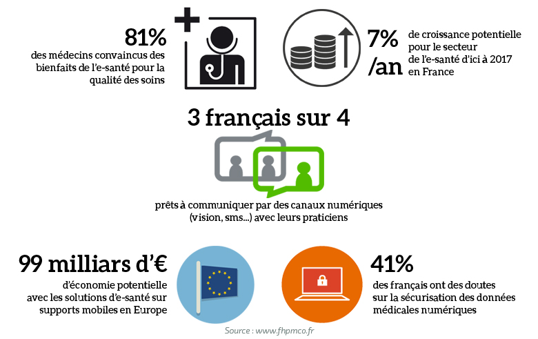

Qu'est-ce que la e-santé ?
80 % des médecins généralistes de moins de 50 ans utilisent déjà les principaux outils numériques. Le terme d’e-santé regroupe l’ensemble des domaines et services où la technologie est mise au service de la santé.
On retrouve par exemple:
- La téléconsultation
- La m-santé (la santé mobile) qui comprend les applications numériques pour smartphones ou objets connectés en lien avec la santé
- La télémédecine, les actes médicaux réalisés à distance par un médecin
- La télé-expertise, l'échange d’avis entre médecins, notamment pour les maladies chroniques
- Le suivi post-opératoire ou l'hospitalisation à domicile
- L'analyse des métadonnées : l'utilisation des big data afin d'obtenir des diagnostics plus pertinents
D'après la fédération de l'hospitalisation privée, 81% de médecins sont convaincus des bienfaits de la e-santé pour la qualité des soins et 3 Français sur 4 sont prêts à communiquer par voie numérique avec leurs practiciens.

source : fhpmco